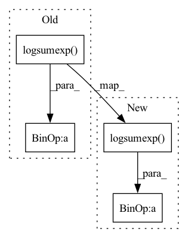

Pattern ID :22075

Before Change
y_pred_pos = torch.cat([y_pred_pos, torch.zeros_like(y_pred_pos[..., :1])], dim=-1)
y_pred_neg = torch.cat([y_pred_neg, torch.zeros_like(y_pred_neg[..., :1])], dim=-1)
loss = torch.sum(torch.logsumexp(y_pred_pos, 1) + torch.logsumexp(y_pred_neg, 1)) / y_pred_neg.shape[0]
return loss
After Change
y_pred_pos = torch.cat([y_pred_pos, torch.zeros_like(y_pred_pos[..., :1])], dim=-1)
y_pred_neg = torch.cat([y_pred_neg, torch.zeros_like(y_pred_neg[..., :1])], dim=-1)
pos_loss = torch.logsumexp(y_pred_pos, dim=-1)
neg_loss = torch.logsumexp(y_pred_neg, dim=-1)
return (pos_loss + neg_loss).mean()
class SparseMultilabelCategoricalCrossentropy(nn.Module):
In pattern: SUPERPATTERN
Frequency: 3
Non-data size: 4
Instances
Fragment ID: 70017116
Project Name: tongjilibo/bert4torch
Commit Name: 2ffc5a7ad5dabc479003a094c5dbecebdc503537
Time: 2022-04-04
Author: tongjilibo@163.com
File Name: bert4torch/losses.py
M Class Name: MultilabelCategoricalCrossentropy
N Class Name: MultilabelCategoricalCrossentropy
M Method Name: forward(3)
N Method Name: forward(3)
M Parent Class: nn.Module
N Parent Class: nn.Module
M File Name: bert4torch/losses.py
N File Name: bert4torch/losses.py
M Start Line: 63
M End Line: 66
N Start Line: 63
N End Line: 67
'>
Before Change
// Calculate negative log likelihood.
// (B, max(T), G, D_out) -> (B, max(T), D_out)
loss = torch.logsumexp(loss, dim=2)
// Sum along the dimension of target variables to reduce the dim of loss
// (B, max(T), D_out) -> (B, max(T))
loss = torch.sum(loss, dim=2)
if reduce:
// (B, max(T)) -> (B)
return -torch.mean(loss, dim=1)
else:
// not averaged (for applying mask later)
// (B, max(T))
return -loss
After Change
// Calculate negative log likelihood.
// (B, T, G) -> (B, T)
loss = -torch.logsumexp(loss, dim=2)
if reduce:
// (B, T) -> (B)
return torch.mean(loss, dim=1)
'>
Fragment ID: 70017130
Project Name: r9y9/nnsvs
Commit Name: 430584437cc98f602b98198b49c33564f4bf0d9c
Time: 2020-10-01
Author: taroushirani@gmail.com
File Name: nnsvs/mdn.py
M Class Name: AnonimousClass
N Class Name: AnonimousClass
M Method Name: mdn_loss(5)
N Method Name: mdn_loss(5)
M Parent Class:
N Parent Class:
M File Name: nnsvs/mdn.py
N File Name: nnsvs/mdn.py
M Start Line: 68
M End Line: 96
N Start Line: 68
N End Line: 96
'>
Before Change
)
r[t, 0] = r[t, 0] + x_inflate[0, t]
// 2. p(h|cur step is blank) = [p(prev step is blank) + p(prev step is nonblank)] * p(blank)
r[t, 1] = torch.logsumexp(
torch.stack((r[t - 1, 0], r[t - 1, 1]), dim=0), dim=0
)
r[t, 1] = r[t, 1] + x_inflate[1, t]
// Compute the predix prob
psi_init = r[start - 1, 0].unsqueeze(0)
After Change
r_ = torch.stack([rnb_prev, phi[t - 1], rnb_prev, rb_prev]).view(
2, 2, self.batch_size * self.beam_size, self.num_candidates
)
r[t] = torch.logsumexp(r_, 1) + x_inflate[:, t]
// Compute the predix prob, psi
psi_init = r[start - 1, 0].unsqueeze(0)
'>
Fragment ID: 70017126
Project Name: speechbrain/speechbrain
Commit Name: f4ecd17ce143ffc714823e1ee81742dbac3eec2b
Time: 2020-10-12
Author: ff936tw@gmail.com
File Name: speechbrain/decoders/ctc.py
M Class Name: CTCPrefixScorer
N Class Name: CTCPrefixScorer
M Method Name: forward_step(4)
N Method Name: forward_step(4)
M Parent Class:
N Parent Class:
M File Name: speechbrain/decoders/ctc.py
N File Name: speechbrain/decoders/ctc.py
M Start Line: 118
M End Line: 160
N Start Line: 61
N End Line: 159